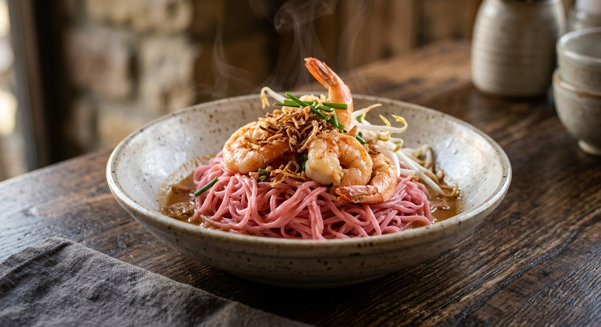

Thin rice vermicelli tossed in coconut milk until every strand turns pink, then a sweet-sour coconut gravy of minced pork, prawns and tofu poured over the top — central Thailand's two-pan noodle dish.

หมี่กะทิ splits neatly into its parts: หมี่ (mee) is the thread-thin rice vermicelli, กะทิ (kati) the coconut milk — and the dish delivers both, twice. One pan holds the เส้นหมี่สีชมพู, noodles tossed in coconut milk until every strand drinks it and turns pink. The other holds the น้ำราด: the same coconut milk, seasoned with fermented soybean paste, palm sugar and tamarind, carrying minced pork, minced prawns and diced tofu. The two meet only at the table, when the gravy goes over the noodles.
It is a central Thai dish with a long pedigree. Wongnai's version carries the title หมี่กะทิชาววัง — "palace-style" — inherited, its author says, from earlier generations; Pim of ครัวบ้านพิม traces her formula to a cookbook by อ.จรรยา สุบรรณ์ written more than thirty years ago; the Bloggang cook from Belgium files hers squarely under หมี่กะทิภาคกลาง, central Thai mee kati.
The street version, Pim complains, is just noodles dyed pink with food colouring and nothing on them — which is why she learned to make her own. At home the pink comes honestly: yen ta fo sauce, a cube of red fermented tofu, or in the oldest formulas, tomato ketchup. And the toppings come loaded.
| Thai | English | Amount |
|---|---|---|
| เส้นหมี่ | Thin rice vermicelli (sen mee) | 200 g |
| กะทิ | Coconut milk, divided | 2 cups |
| หมูสับ | Minced pork | 200 g |
| กุ้งสับ | Minced prawns | 200 g |
| เต้าเจี้ยว | Fermented soybean paste (tao jiew) | 4 tbsp |
| น้ำมะขามเปียก | Tamarind water | 4 tbsp |
| น้ำตาลปี๊บ | Palm sugar | 3 tbsp |
| พริกป่น | Chilli powder | 1 tbsp |
| เต้าหู้แข็ง | Firm tofu, diced | ½ cup |
| หอมแดงสับ | Shallots, chopped | ½ cup |
| ซอสเย็นตาโฟ | Yen ta fo sauce (for the pink) | 3 tbsp |
| ซอสมะเขือเทศ | Tomato ketchup (for the pink) | 3 tbsp |
| ไข่ไก่ | Eggs, for the shredded omelette | 2 |
| ถั่วงอก | Bean sprouts | 1 cup |
| กุยช่าย | Garlic chives | 1 cup |
| ถั่วลิสงคั่วบด | Roasted crushed peanuts, to serve | 4 tbsp |
The palace pot (Wongnai): 2 cups kati, a full cup each of pork and prawn mince, ¼ cup white tao jiew, ¾ cup firm tofu, 2 tbsp fish sauce, 3 tbsp palm sugar and 5 tbsp tamarind, noodles tossed in kati with 4 tbsp yen ta fo sauce. The cookbook pot (Krua / แสงแดด): tao jiew, eight shallots and ¼ cup red fermented tofu pounded into a paste; 150 g coarse pork and ¼ cup small prawns in head-and-tail kati, 4 tbsp fish sauce, 5 tbsp tamarind — then half the finished gravy is folded into the noodles themselves. The thirty-year-old pot (Pim, from อ.จรรยา สุบรรณ์): fresh kati squeezed from 250 g grated coconut, seasoned with pounded white tao jiew, its brine and palm sugar — no fish sauce at all — and noodles turned pink with 4 tbsp concentrated ketchup. The Isaan namesake (Aroifin): a different dish — red curry paste fried in 500 ml kati until it splits, 500 g pork, tamarind, beaten egg and peanuts, ladled over plain white noodles.
The pink. Yen ta fo sauce (Wongnai, Pantip, Bloggang), red fermented tofu — whole, or just its brine (DekSomboon, Phol) — or tomato ketchup alone (Pim's thirty-year-old formula). Kapook's recipe, the one used here, doubles up: ketchup and yen ta fo. All agree only on what the pink is not: plain food colouring, which is the street-cart shortcut.
To toss or to stir. Pim, Bloggang and the Cookpad cook all forbid hard stirring — the noodles are lifted and shaken until they drink the coconut milk, because stir-frying turns them to mush. Wongnai and DekSomboon write ผัด (stir-fry) and mean it, but with the same warning against overworking the threads.
The salt. Krua, Wongnai and DekSomboon season with fish sauce. Pim's old formula uses no fish sauce at all — the brine from the tao jiew does the salting, and she keeps it back on purpose. Bloggang pours in a spoon of the same brine. Pantip points out the saltiness is the tao jiew's job in the first place.
The split. Pim, Pantip and Bloggang hold out for กะทิแตกมัน — the coconut milk breaking its oil — before the meat goes in. Kapook, Wongnai and DekSomboon go straight from boiling coconut milk to shallots and seasoning, skipping the wait entirely.
Where the noodles cook. Most versions toss the noodles in a separate pan of pink coconut milk. Krua's cookbook version cooks the noodles in half the finished gravy itself, then pours the reserved half on top — one sauce doing both jobs.
The Isaan namesake. Aroifin's หมี่กะทิ สไตล์อีสาน shares the name and nothing else: red curry paste fried in coconut milk, half a kilo of pork, beaten egg and peanuts, served over plain white noodles with fresh herbs. Same two words, a different dish — and a reminder that the pink belongs to the central Thai version.
This recipe is translated from the following Thai-language sources. Where they disagree, we've said so.
1. Kapook Cooking — "หมี่กะทิสีชมพู ผัดหมี่ตำรับโบราณเปรี้ยวหวานต้องลอง" (the recipe used here, credited to tukata001 of Pantip) — cooking.kapook.com
2. Wongnai — "หมี่กะทิชาววัง เมนูอาหารไทยเส้นสีชมพู หวานหอมมันจากกะทิ" by แม่หญิงแพรวา (the palace version) — wongnai.com
3. ครัวบ้านพิม (Pim) — "หมี่กะทิ", from a cookbook by อ.จรรยา สุบรรณ์ written over thirty years ago (the ketchup-pink formula, tao jiew brine instead of fish sauce) — pim.in.th
4. Bloggang — "ชมพูเพลินพิศ พรรณราย : หมี่กะทิภาคกลาง" by venus-bart-charlotte (explicitly central Thai; the สรง technique) — bloggang.com
5. Krua.co — "หมี่กะทิ" by ศิริลักษณ์ รอตยันต์, สำนักพิมพ์แสงแดด (the pounded-paste version that cooks the noodles in half the gravy) — krua.co
6. DekSomboon — "หมี่กะทิ" (the red-fermented-tofu version) — deksomboon.com
7. Phol Food Mafia — "Thai Coconut Noodles (หมี่กะทิ)" by ยีสต์ นกุล กวินรัตน์, HOME COOKED (coriander-root paste, tofu brine for the pink) — pholfoodmafia.com
8. Pantip — "มาทำ 'หมี่กะทิสูตรโบราณ' หรือที่ใคร ๆ เรียกว่าหมี่สีชมพูกันเถอะ" topic 37045065 (the classic-formula thread) — pantip.com
9. Aroifin — "หมี่กะทิ สไตล์อีสาน" by mimi (the Isaan namesake, included for contrast) — aroifin.com